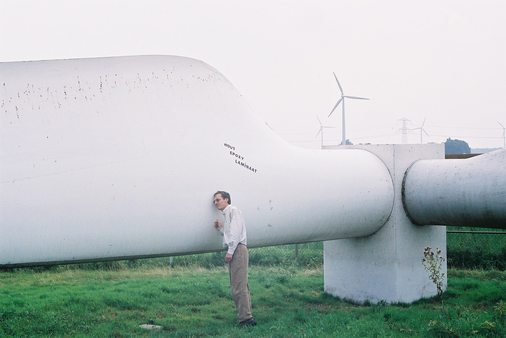

An engineer who specialises in renewable energy and working towards
a sustainable future for all!
... at least according to my dad.

Dr Douglas Banks, my father, admiring the length of a wind turbine blade.
Nurtured by my family's encouragement for inventive exploration,
I embraced the role of a 'tinkerer' from a young age. During my formative years, I sketched elaborate limousines adorned with solar panels,
envisioning what I believed could be groundbreaking solar-powered vehicles. This imaginative pursuit was notably influenced by my father,
a distinguished holder of a PHD in mechanical engineering who, during the early 2000s, was actively engaged in solar and renewable technology
initiatives. Unfortunately he passed away in my early childhood. These formative experiences and inspirations have shaped my trajectory as a
renewable engineer and left me determined to play a pivotal role in the development of sustainable solutions and a greener future.
Big smiles as I cross the equator on my motorcycle trip from Monaco, France to Cape Town, South Africa!
During my gap year in 2019, I managed to earn enough euros on the super yachts in France to buy a bike at the end of my contract.
I then set off alone on an epic trip across Europe to Turkey and then down the east coast of Africa until I somehow made it home in one piece.
Artistic expression of any kind has always been encouraged in my family. Art has been anything from an idle past time to a meaningful expression of self.
This is one of my final works for my matric exhibition.
Myself and Oliver Kane-Smith winning the men’s B pair for UCT at South African Senior Champs.
I was also the stroke for the UCT first eight at the South African University’s Boatrace where we placed third.
Learning some welding basics in a different friends workshop!
This time I set out on an ambitious life sized sculpture with a friend. The sculpture is still in progress, here you can see the legs are starting to take shape.
A group of friends and I built a 3m diameter mushroom that stood 2.5m tall for Zero Gravity Festival. It was given a beautiful glow by some of Moths Inc lighting equipment! You can check out some videos of the mushroom in this post.
While working at Snowshoe Ski Resort in West Virginia I fell in love with snowboarding! During the three months that I worked as a ski technician I spent any free minute I had on the slopes.